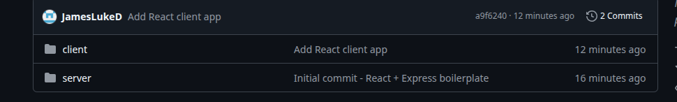

Fixing a Git Subdirectory Treated as a Separate Repo
In this mini blog, I’ll explain a frustrating Git issue I ran into while building my e-commerce site, my `client` folder kept getting treated like its own Git repository.
At first, I tried deleting the `.git` folder inside the `client` directory, thinking that would fix the issue. But even after reinitializing Git and trying again, the problem persisted. Git kept treating `client/` like a sub-module or separate repo.
In the process, I accidentally deleted my entire project folder (oops...), so I decided to take that as a sign to start fresh and rebuild everything from scratch, the right way this time.
Starting Over — Folder Structure
From the root, I recreated my project layout like this:
mkdir techstoreapp
cd techstoreapp
mkdir client server
I went into my server directory to set up the express server and set up the React client inside the client directory
Inside the client directory:
npx create-react-app .
Inside the server directory:
cd server
npm init -y
npm install express cors
I then initalised the git and added all the files and commited it into the repo
git init
git add .
git commit -m "Initial commit - React + Express boilerplate"
and linked it to my Github Repo
git remote add origin https://github.com/YOUR_USERNAME/techstoreapp.git
git branch -M main
git push -u origin main
But, i was still getting issues with the git adding the client folder as a sub-directory inside my repository which didn't contain any folders again...
Setting Up the React Client From Root
The mistake I made before was creating the `client/` directory manually and then running:
npx create-react-app .
...**inside that folder**, which caused Git tracking issues and a messed up structure on GitHub.
This time, I stayed in the root and ran:
npx create-react-app client
That created the `client/` folder and initialized the React app properly. It also avoided any Git confusion.
Then, I initialized Git from the root and pushed everything to GitHub:
git add client
git commit -m "Add React client app"
git push
Horayy. Once i'd created the react application at the same time as the directory it had correctly initialised onto the GitHub repository.
Once I let `create-react-app` generate the folder from the root, instead of running it inside an existing empty directory — everything worked fine. Git tracked the folder correctly, and GitHub displayed all the files
I’m still not 100% sure what caused the original issue (it didn’t seem like a true submodule), but this approach resolved it.
Final Tip
Back up your folders before experimenting with Git. Deleting `.git` or running `git rm -f` can wipe your files completely. If you’re running into Git ignoring or misreading your folders, try rebuilding the directory and letting `create-react-app` do its job from the root level.